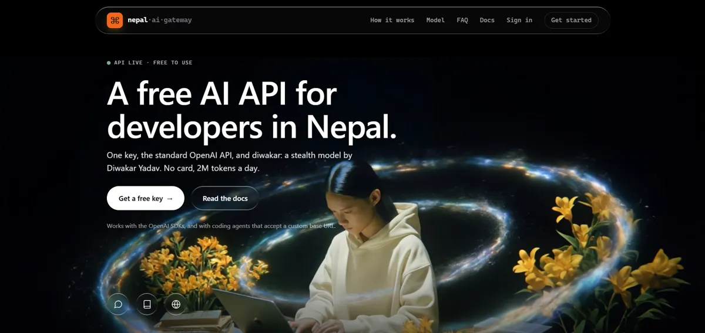
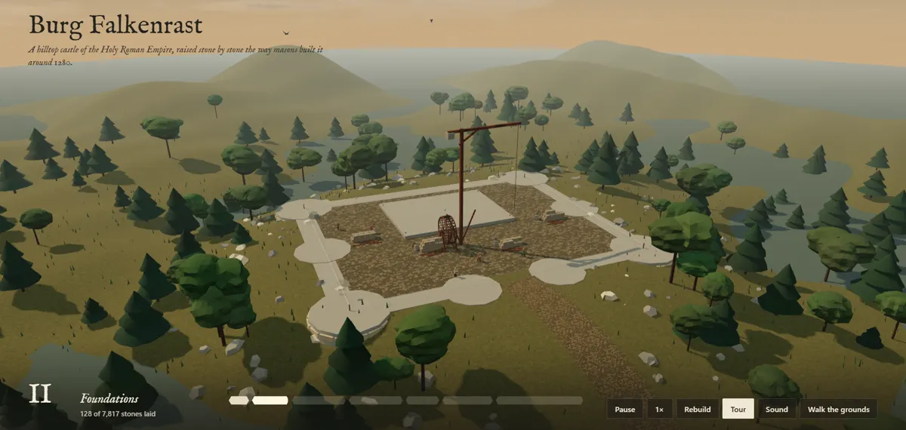
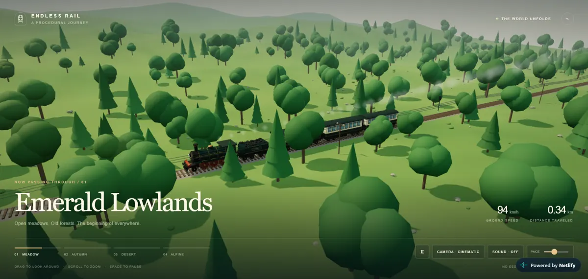
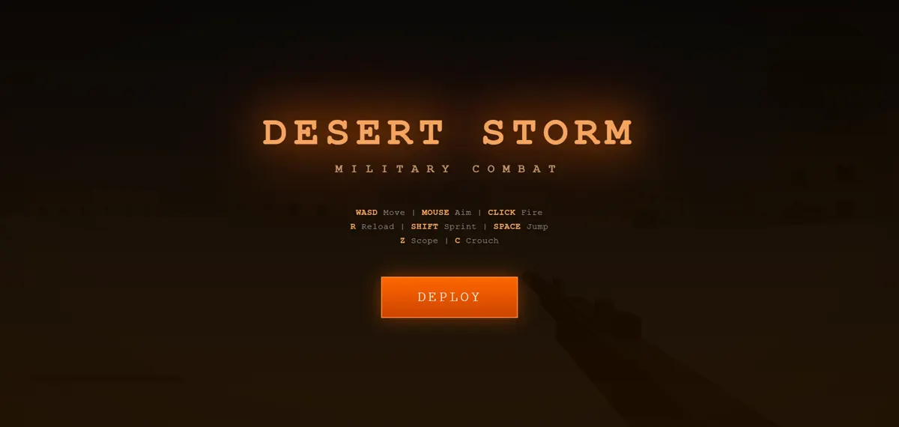

Featured Projects
A showcase of my recent work and achievements

Nepal AI Gateway
A free AI API for developers in Nepal. Sign in with Google, get a key, and call the stealth model "diwakar" through the standard OpenAI API: 2M tokens a day, no card.
View ProjectSystemCleaner Pro
A Windows cleanup script that clears temporary files, caches, and clutter to keep systems running lean. A practical automation tool born straight out of real IT troubleshooting work.
View on GitHubFile Organizer
A second-semester project that automatically sorts files into folders by type. It's the build that taught me the most about how automation actually works under the hood.
View on GitHubAI Builds
Small things I build to see what a new AI model can really do.

Burg Falkenrast
A hilltop castle that builds itself stone by stone, 7,817 stones in all. When it is done, you can walk through the gate and into the great hall.
Open the buildOlympus
A Greco-Roman acropolis made only from code. No 3D models and no image textures: every column, leaf, waterfall and cloud is generated when the page loads.
Open the build
Endless Rail
A train ride that never ends. The world is generated as you go, from meadows to autumn forests, desert and alpine peaks.
Open the build
Desert Storm
A first-person military shooter that runs in the browser. Move, aim, scope and reload, with no install and no game engine.
Play it